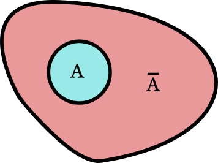

Chapter 3 Notes: Probability
Sample Space: Set of all possible outcomes.
Event: Any set of outcomes (subset of sample space).
Probability of Event: Frequency of the event over a large number of trials.
Example: Tuberculin skin test to detect tuberculosis
Outcome Prob Positive 0.1 Negative 0.7 Uncertain 0.2 Sample Space: \(\{ \text{Positive}, \text{Negative}, \text{Uncertain} \}\)
Possible Events:
Event Prob \(\{ \text{Positive} \}\) 0.1 \(\{ \text{Negative} \}\) 0.7 \(\{ \text{Uncertain} \}\) 0.2 \(\{ \text{Positive, Negative} \}\) 0.8 \(\{ \text{Positive, Uncertain} \}\) 0.3 \(\{ \text{Negative, Uncertain} \}\) 0.9 \(\{ \text{Positive, Negative, Uncertain} \}\) 1 Notation:
- \(P(E) =\) Probability of event \(E\)
- E.g., if \(E = \{\text{Positive, Negative}\}\), then \(P(E) = 0.8\)
Two events are mutually exclusive if they cannot both happen at the same time.
Example:
\(E_1 = \{\text{Positive, Negative}\}\)
\(E_2 = \{\text{Uncertain}\}\)
\(E_3 = \{\text{Negative, Uncertain}\}\)
\(E_1\) and \(E_2\) are mutually exclusive.
\(E_1\) and \(E_3\) can both happen if the outcome is “Negative.”
\(E_2\) and \(E_3\) can both happen if the outcome is “Uncertain.”
If \(E_1\) and \(E_2\) are mutually exclusive, then: \[P(E_1 \cup E_2) = P(E_1) + P(E_2)\]
\(E_1 \cup E_2\) = Either \(E_1\) or \(E_2\) or both occur.
- Read “\(E_1\) or \(E_2\)”.
Mutually Exclusive Events:
- The big blob is the entire sample space.
- Each event is a circle.
- Area of shapes are proportional to probability of event.
Non-mutually Exclusive Events:
The complement of \(A\), denoted \(\overline{A}\), is the event that \(A\) does not occur.
Example:
- \(E_1 = \{\text{Positive, Negative}\}\)
- \(\overline{E_1} = \{\text{Uncertain}\}\)
\(P(\{\text{Sample Space}\}) = 1\)
\[ P(\overline{A}) = 1 - P(A) \Rightarrow P(A) = 1 - P(\overline{A}) \]

- Example:
- \(P(\text{Uncertain}) = 1 - P(\{\text{Positive, Negative}\}) = 1 - 0.8 = 0.2\)
Two events are independent if and only if \[ P(A \cap B) = P(A) \cdot P(B) \]
\(A \cap B\) = \(A\) and \(B\) both occur.
- Read “\(A\) and \(B\)”
Intersection:
Example:
\(P(\text{Mother DBP > 90}) = P(A) = 0.1\)
\(P(\text{Father DBP > 90}) = P(B) = 0.2\)
If independent, \[ P(A \cap B) = P(A)P(B) = 0.1 \cdot 0.2 = 0.02 \]
Why called “independent”?
- \(A\) is 10% of sample space area.
- \(A\) is 10% of \(B\)’s area.
- \(B\) becomes the sample space if it occurs, and we don’t know \(A\), so \(A\) still has a 10% chance, even if we know \(B\).
- Therefore, \(B\) occurring or not occurring does not change the probability of \(A\).
- \(A^+\): Doctor \(A\) diagnoses \(+\)
- \(B^+\): Doctor \(B\) diagnoses \(+\)
- \(P(A^+) = 0.1\), \(P(B^+) = 0.17\), \(P(A^+ \cap B^+) = 0.09\)
- Are the events independent?
- \(0.1 \cdot 0.17 = 0.017 \neq 0.09\)
- Therefore, the events are not independent.
- Events \(A_1, A_2, \dots, A_n\) are mutually independent if \[ P(A_1 \cap A_2 \cap \dots \cap A_n) = P(A_1) \times P(A_2) \times \cdots \times P(A_n) = \prod_{i=1}^{n} P(A_i) \]
\[P(A \cup B) = P(A) + P(B) - P(A \cap B)\]
What is the probability that Doctor \(A\) or \(B\) diagnoses \(+\)?
\[ P(A^+ \cup B^+) = 0.1 + 0.17 - 0.08 = 0.19 \]
- Note: \(P(A \cap B) = 0\) if \(A\) and \(B\) are mutually exclusive.
\[P(A | B) = \frac{P(A \cap B)}{P(B)}\]
- This represents the “probability of \(A\) given \(B\).”
- We already know \(B\) has occurred. Given this, what is the probability of \(A\) occuring?
- What proportion of \(B\) is also \(A\)?
- If \(A \perp B\), then \(P(A | B) = P(A)\).
\(A \perp B\) = \(A\) and \(B\) are independent.
Proof: \[P(A | B) = \frac{P(A \cap B)}{P(B)} = \frac{P(A) \cdot P(B)}{P(B)} = P(A)\]
- Relative Risk of \(B\) given \(A\): \[\frac{P(B | A)}{P(B | \overline{A})}\]
- This is a measure of dependence between \(A\) and \(B\).
- \(=\) 1 \(\Rightarrow\) Independent
- \(<\) 1 \(\Rightarrow B\) less likely given \(A\)
- \(>\) 1 \(\Rightarrow B\) more likely given \(A\)
- This is a measure of dependence between \(A\) and \(B\).
- Suppose \(P(A^+) = 0.1\), \(P(B^+) = 0.17\), \(P(A^+ \cap B^+) = 0.08\)
- What is \(P(A^+ | B^+)\)?
- What is \(P(B^+ | A^+)\)?
- What is \(P(A^- | B^+)\)?
- What is \(P(B^- | B^+)\)?
By the definition of conditional probability, we have \[ P(A^+ | B^+) = \frac{P(A^+ \cap B^+)}{P(B^+)} = \frac{0.08}{0.17} = 0.4706. \] Similarly \[ P(B^+ | A^+) = \frac{P(A^+ \cap B^+)}{P(A^+)} = \frac{0.08}{0.1} = 0.8. \]
To calculate \(P(A^- | B^+)\) and \(P(B^- | A^+)\), use the complement rule \[ P(A^- | B^+) = 1 - P(A^+ | B^+) = 1 - 0.4706 = 0.5294 \] \[ P(B^- | A^+) = 1 - P(B^+ | A^+) = 1 - 0.8 = 0.2 \]
- Note: In biostatistics, we typically write \(\overline{A^+}\) as \(A^-\).
\[\begin{align*} P(A) &= P(A \cap B) + P(A \cap \overline{B})\\ &= P(A | B) P(B) + P(A | \overline{B}) P(\overline{B}) \end{align*}\]
Visualization of Total Probability:
- Define:
- \(A = \{\text{Mammogram } +\}\)
- \(B = \{\text{Breast Cancer } +\}\)
- Given:
- \(P(B | \overline{A}) = 0.0002\)
- \(P(B | A) = 0.1\)
- \(P(A) = 0.07\)
- Question: What is \(P(B)\)?
\[\begin{align*} P(B) &= P(B | \overline{A}) \cdot P(\overline{A}) + P(B | A) \cdot P(A)\\ &= 0.0002 \cdot (1 - 0.07) + 0.1 \cdot 0.07\\ &= 0.007186 \end{align*}\]
More generally, if \(A_1, A_2, \dots, A_k\) partition the sample space, then \[P(B) = \sum_{i=1}^k P(B | A_i) \cdot P(A_i)\]
- Partition: They are all mutually exclusive and together they make up the entire sample space.
Visualization of Law of Total Probability:
Example:
Let:
- \(A_1 = \{\text{Age 60-64}\}\)
- \(A_2 = \{\text{Age 65-69}\}\)
- \(A_3 = \{\text{Age 70-74}\}\)
- \(A_4 = \{\text{Age 75+}\}\)
- \(B = \{\text{Cataract}\}\)
Given probabilities:
\(A_i\) \(P(A_i)\) \(P(B | A_i)\) \(A_1\) (60-64) 0.45 0.024 \(A_2\) (65-69) 0.28 0.46 \(A_3\) (70-74) 0.20 0.88 \(A_4\) (75+) 0.07 0.53 To calculate \(P(B)\): \[\begin{align*} P(B) &= \sum_{i=1}^4 P(B | A_i) \cdot P(A_i)\\ &= 00.24 \times 0.45 + 0.46 \times 0.28 + 0.88 \times 0.20 + 0.53 \times 0.07 \end{align*}\]
Predictive Value Positive (PV+) (also called Precision): \[ PV^+ = P(\text{disease | test+}) \]
Predictive Value Negative (PV-): \[ PV^- = P(\text{no disease | test-}) \]
Confusion Matrix:
Test
Test Positive \(T^+\)
Test Negative \(T^-\)
Truth
Positive \(D^+\)
True Positive (TP)
False Negative (FN)
(Type II Error)Sensitivity
(True Positive Rate, Recall, Power)
\(\frac{TP}{D^+}\)False Negative Rate
(Type II Error Rate)
\(\frac{FN}{D^+}\)Negative \(D^-\)
False Positive (FP)
(Type I Error)True Negative (TN)
False Positive Rate
(Type I Error Rate)
\(\frac{FP}{D^-}\)Specificity
(True Negative Rate)
\(\frac{TN}{D^-}\)Prevalence
\(\frac{D^+}{D^+ + D^-}\)Positive Predictive Value
(Precision)
\(PV^+ = \frac{TP}{T^+}\)False Omission Rate
\(\frac{FN}{T^-}\)False Discovery Rate
\(\frac{FP}{T^+}\)Negative Predictive Value
\(PV^- = \frac{TN}{T^-}\)Example:
- Let:
- \(A = \{\text{Mammogram } +\}\)
- \(B = \{\text{Breast Cancer } +\}\)
- Given:
- \(P(B | A) = 0.1\)
- \(P(B | \overline{A}) = 0.0002\)
- Calculate \(PV^+\) and \(PV^-\):
- \(PV^+ = P(B | A) = 0.1\)
- \(PV^- = P(\overline{B} | \overline{A}) = 1 - P(B | \overline{A}) = 1 - 0.0002 = 0.9998\)
- Let:
Sensitivity: \[\text{Sensitivity} = P(\text{test } + | \text{disease } +)\]
- Also called the True Positive Rate.
Specificity: \[\text{Specificity} = P(\text{test } - | \text{disease } -)\]
- Also called the True Negative Rate.
Note: “Test” can also refer to other indicators, such as symptoms.
Example:
90% of individuals with lung cancer are smokers.
30% of individuals without lung cancer are smokers.
Question: What are the sensitivity and specificity of smoking as a screening test?
- Here, the “test” is positive if an individual is smoker and is negative if the individual is not a smoker.
- Let:
- \(A = \{\text{smoker}\}\)
- \(B = \{\text{lung cancer}\}\)
- Solution:
- Sensitivity: \[\text{Sensitivity} = P(A | B) = 0.9\]
- Specificity: \[\text{Specificity} = P(\overline{A} | \overline{B}) = 1 - P(A | \overline{B}) = 1 - 0.3 = 0.7\]
\[ P(B | A) = \frac{P(A | B) \cdot P(B)}{P(A)} \]
\(P(B)\) is the prior probability.
\(P(B | A)\) is the posterior probability.
Typically, \(P(A)\) is obtained using the law of total probability: \[ P(A) = P(A | B) P(B) + P(A | \overline{B}) P(\overline{B}) \]
Motivation:
- To find \(P(\text{disease} | \text{test}+)\) (i.e., \(PV^+\)), you typically know:
- \(P(\text{test} + | \text{disease})\) (Sensitivity)
- \(P(\text{test} - | \text{no disease})\) (Specificity)
- Formula for \(PV^+\): \[\begin{align*} PV^+ &= P(D^+|T^+)\\ &= \frac{P(T^+|D^+)P(D^+)}{P(T^+)}\\ &= \frac{P(T^+|D^+)P(D^+)}{P(T^+|D^+)P(D^+) + P(T^+|D^-)P(D^-)}\\ &= \frac{\text{Sensitivity} \times X}{\text{Sensitivity} \times X + (1 - \text{Specificity}) \times (1 - X)} \end{align*}\] where \(X = P(B)\) (prevalence of disease).
- To find \(P(\text{disease} | \text{test}+)\) (i.e., \(PV^+\)), you typically know:
Example:
84% of hypertensives and 23% of normotensives are classified as hypertensive by a machine.
Prevalence of hypertension is 20%.
Question: What are \(PV^+\) and \(PV^-\)?
Solution:
Given:
- \(A = \{\text{test} +\}\)
- \(B = \{\text{hypertensive}\}\)
- \(P(B) = 0.2 \Rightarrow P(\overline{B}) = 0.8\)
- \(P(A | B) = 0.84\)
- \(P(A | \overline{B}) = 0.23 \Rightarrow P(\overline{A} | \overline{B}) = 1 - 0.23 = 0.77\)
First, calculate \(P(A)\) using the law of total probability: \[\begin{align*} P(A) &= P(A | B) P(B) + P(A | \overline{B}) P(\overline{B})\\ &= (0.84 \cdot 0.2) + (0.23 \cdot 0.8)\\ &= 0.352 \end{align*}\]
- Therefore, \(P(\overline{A}) = 1 - P(A) = 0.648\)
Calculate \(PV^+\): \[ PV^+ = P(B|A) = \frac{P(A | B) \cdot P(B)}{P(A)} = \frac{0.84 \cdot 0.2}{0.352} = 0.48 \]
Calculate \(PV^-\): \[ PV^- = P(\overline{B} | \overline{A}) = \frac{P(\overline{A} | \overline{B}) \cdot P(\overline{B})}{P(\overline{A})} = \frac{0.77 \cdot 0.8}{0.648} = 0.95 \]
Recall: Law of Total Probability may include more than 2 events. \[P(A) = P(A | B_1) P(B_1) + P(A | B_2) P(B_2) + \dots + P(A | B_k) P(B_k)\]
Prevalence: \[\text{Prevalence} = P(\text{disease} +)\]
- Proportion of the population that has the disease.
Cumulative Incidence: \[\text{Cumulative Incidence} = P(\text{will get disease | never had it})\]
Exercises 3.53 - 3.59 of Rosner
The familial aggregation of respiratory disease is a well-established clinical phenomenon. However, whether this aggregation is due to genetic or environmental factors or both is somewhat controversial. An investigator wishes to study a particular environmental factor, namely the relationship of cigarette-smoking habits in the parents to the presence or absence of asthma in their oldest child age 5 to 9 years living in the household (referred to below as their offspring). Suppose the investigator finds that (1) if both the mother and father are current smokers, then the probability of their offspring having asthma is 0.15; (2) if the mother is a current smoker and the father is not, then the probability of their offspring having asthma is 0.13; (3) if the father is a current smoker and the mother is not, then the probability of their offspring having asthma is 0.05; and (4) if neither parent is a current smoker, then the probability of their offspring having asthma is 0.04.
Convert this word problem to mathematical notation amenable to analysis.
Define:
- \(M^+ =\) Mother smokes
- \(F^+ =\) Father smokes
- \(O^+ =\) Offspring has asthma
Given probabilities:
Scenario \(P(O^+ | \text{Scenario})\) \(M^+ \cap F^+\) 0.15 \(M^+ \cap F^-\) 0.13 \(M^- \cap F^+\) 0.05 \(M^- \cap F^-\) 0.04
Suppose the smoking habits of the parents are independent and the probability that the mother is a current smoker is 0.4, whereas the probability that the father is a current smoker is 0.5. What is the probability that both the father and mother are current smokers?
Use the “and” rule.
We want to calculate \(P(M^+ \cap F^+)\) given: \(P(M^+) = 0.4\), \(P(F^+) = 0.5\), \(M^+ \perp F^+\) \[ P(M^+ \cap F^+) = P(M^+) \cdot P(F^+) = 0.4 \cdot 0.5 = 0.2 \]
Consider the subgroup of families in which the mother is not a current smoker. What is the probability that the father is a current smoker among such families? How does this probability differ from that calculated in Problem 1?
Use independence.
We want to calculate \(P(F^+ | M^-)\). However, since \(M^+\) and \(F^+\) are independent, \(P(F^+ | M^-) = P(F^+) = 0.5\). This is just the probability that the father is a smoker, as opposed to part 1 where we calculated the probability that both father and mother are smokers.
Suppose, alternatively, that if the father is a current smoker, then the probability that the mother is a current smoker is 0.6; whereas if the father is not a current smoker, then the probability that the mother is a current smoker is 0.2. Also assume that statements 1, 2, 3, and 4 above hold.
If the probability that the father is a current smoker is 0.5, what is the probability that the father is a current smoker and that the mother is not a current smoker?
Use \(P(F^+ \cap M^-) = P(M^- | F^+) \cdot P(F^+)\).
Converting the word problem to math notation, we have::
\(P(M^+ | F^+) = 0.6\)
\(P(M^+ | F^-) = 0.2\)
\(P(F^+) = 0.5\)
Our goal is to calculate \(P(F^+ \cap M^-)\).
By the complement rule, we have \(P(M^- | F^+) = 1 - 0.6\). Using this, we have:
\[ P(F^+ \cap M^-) = P(M^- | F^+) \cdot P(F^+) = (1 - 0.6) \cdot 0.5 = 0.4 \cdot 0.5 = 0.2 \]
Are the current smoking habits of the father and the mother independent? Why or why not?
What is \(P(M^+|F^+)\)? What is \(P(M^+|F^-)\)?
There are a couple ways to check this:
- See if \(P(M^+|F^+) = P(M^+|F^-) = P(M^+)\) (value of \(F\) does not matter). Any inequality here indicates non-independence.
- See if \(P(M^+ \cap F^+) = P(M^+)P(F^+)\), or any other combination, such as \(P(M^- \cap F^+) = P(M^-)P(F^+)\). An inequality here indicates non-independence.
The easiest way is just the first. We know that \(P(M^+|F^+) = 0.6 \neq 0.2 = P(M^+|F^-)\). So no, they are not independent.
Under the assumptions made in Problems 3 and 4, find the unconditional probability that the offspring will have asthma.
Use the law of total probability. You’ll be using \(P(O^+ | M^+ \cap F^+)\), \(P(O^+ | M^+ \cap F^-)\), \(P(O^+ | M^- \cap F^+)\), \(P(O^+ | M^- \cap F^-)\), \(P(M^+ \cap F^+)\), \(P(M^+ \cap F^-)\), \(P(M^- \cap F^+)\), and \(P(M^- \cap F^-)\).
We want to calculate \(P(O^+)\):
Using the law of total probability: \[\begin{align*} P(O^+) &= P(O^+ | M^+ \cap F^+) P(M^+ \cap F^+) + P(O^+ | M^+ \cap F^-) P(M^+ \cap F^-)\\ &+ P(O^+ | M^- \cap F^+) P(M^- \cap F^+) + P(O^+ | M^- \cap F^-) P(M^- \cap F^-) \end{align*}\]
We were given:
- \(P(O^+ | M^+ \cap F^+) = 0.15\),
- \(P(O^+ | M^+ \cap F^-) = 0.13\),
- \(P(O^+ | M^- \cap F^+) = 0.05\), and
- \(P(O^+ | M^- \cap F^-) = 0.04\),
- \(P(M^+|F^+) = 0.6\)
- \(P(M^+|F^-) = 0.2\)
- \(P(F^+) = 0.5\)
We have
- \(P(M^+ \cap F^+) = P(M^+|F^+)P(F^+) = 0.6 * 0.5 = 0.3\)
- \(P(M^+ \cap F^-) = P(M^+|F^-)P(F^+) = 0.2 * 0.5 = 0.1\)
- \(P(M^- \cap F^+) = P(M^-|F^+)P(F^+) = (1 - 0.6) * 0.5 = 0.2\)
- \(P(M^- \cap F^-) = P(M^-|F^-)P(F^+) = (1 - 0.2) * 0.5 = 0.4\)
Substituting the values: \[ P(O^+) = (0.15 \cdot 0.3) + (0.13 \cdot 0.1) + (0.05 \cdot 0.2) + (0.04 \cdot 0.4) = 0.084 \]
Suppose a child has asthma. What is the posterior probability that the father is a current smoker?
Use Bayes rule.
Also note that \(P(O^+ \cap F^+) = P(O^+ \cap F^+ \cap M^+) + P(O^+ \cap F^+ \cap M^-)\).
We want to calculate \(P(F^+ | O^+)\). Using Bayes rule we have
\[ P(F^+ | O^+) = \frac{P(F^+ \cap O^+)}{P(O^+)} \] We already calculated \(P(O^+) = 0.084\) from Exercise 5. The hard part is \(P(F^+ \cap O^+)\). But we can use the law of total probability to get that. \[\begin{align*} P(F^+ \cap O^+) &= P(F^+ \cap O^+ \cap M^+) + P(F^+ \cap O^+ \cap M^-)\\ &= P(O^+ | F^+ \cap M^+)P(F^+ \cap M^+) + P(O^+ | F^+ \cap M^-)P(F^+ \cap M^-)\\ &= 0.15 \cdot 0.3 + 0.05 \cdot 0.2\\ &= 0.055, \end{align*}\] where we used \(P(F^+ \cap M^+) = 0.3\) and \(P(F^+ \cap M^-) = 0.2\) from Exercise 5.
Substituting values we have \[ P(F^+ | O^+) = \frac{0.055}{0.084} = 0.6548. \]
What is the posterior probability that the mother is a current smoker if the child has asthma?
Use the same strategy as in Exercise 6.
We want \(P(M^+ | O^+)\). Using Bayes rule we have \[ P(M^+ | O^+) = \frac{P(O^+ \cap M^+)}{P(O^+)} \] We can use the exact same strategy as in Exercise 6.
\[\begin{align*} P(M^+ \cap O^+) &= P(F^+ \cap M^+ \cap O^+) + P(F^- \cap M^+ \cap O^+) \text{ (law of total probability)}\\ &= P(O^+ | F^+ \cap M^+) P(F^+ \cap M^+) + P(O^+ | F^- \cap M^+) P(F^- \cap M^+) \text{ (conditional probability)}\\ &= 0.15 \cdot 0.3 + 0.13 \cdot 0.1 \text{ (given/calculated previously)}\\ &= 0.058 \end{align*}\]
Substituting in values we have \[ P(M^+ | O^+) = \frac{0.058}{0.084} = 0.6905. \]